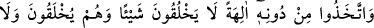
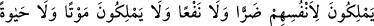
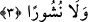

Yâni göklerin ve yerin mülkünde Allah’la çekişecek veya yaratma husûsunda O’na
yardım edecek bir ortak yoktur.
Mesnevî’de der ki:
O egemenlikte tektir, eşi ve ortağı yoktur
Kullarına O’ndan başkası hükümdar değildir
Yarattıklarının bir başka sâhibi yoktur
Helâk olacaktan başkası O’na ortaklık iddiâsında bulunur mu?
“Her şeyi yaratmış” varlıklardan her birini özel maddelerden belirli şekillerde
yaratmış, her birine farklı hüküm ve etkileri olan kuvvetler ve özellikler vermiş, “ona
ölçü , biçim ve düzen vermiştir.” Yâni ondan istediği, ona layık özellikleri ve fiilleri
hazır edip ona vermiştir. Meselâ insana dünyâ ve âhiretle ilgili meseleleri idrak,
anlama, düşünme, tedebbür, çeşitli sanatları keşfetme ve farklı işleri yapabilme
kabiliyeti vermiştir. Diğer türlerin de durumları da bunun gibidir.
3. (Müşrikler) O’nu (Allah’ı) bırakıp, hiçbir şey yaratamayan, bilakis kendileri
yaratılmış olan, kendilerine bile ne zarar ne de fayda verebilen, öldürmeye, hayat
vermeye ve ölüleri yeniden diriltip kabirden çıkarmaya güçleri yetmeyen ilâhlar
edindiler.
Müşrikler kendileri için “O’nu (Allah’ı) bırakıp,” bütün bu varlıkları yaratan Allah’a
ibâdetten yüz çevirerek “hiçbir şey yaratamayan,” asla hiç bir şey yaratmaya güç
yetiremeyen, ne yok etmeye ne başka bir şeye muktedir olmayan “bilakis kendileri”
diğer mahlûkât gibi “yaratılmış olan, kendilerine bile ne zarar ne de fayda verebilen”
yâni onlar ne kendilerinden bir zararı uzaklaştırmaya ne de bir faydayı elde etmeye güç
yetirebilirler. Daha önemli olduğu için burada zarar daha önce zikredilmiştir.
Dolayısıyla nasıl olur da onlar başkalarına fayda veya zarar verebilirler. Onlar
hayvanlardan bile daha âcizdirler. Çünkü genel olarak hayvanlar bazen kendileri için
bir zararı giderme ve faydayı temin etme gücüne sâhip olabilirler.
Ebü’l-Leys’in tefsirinde geçtiği gibi âyette putlardan akıllı varlıklara mahsus bir
lafızla bahsedilmiştir. Çünkü müşrikler onları akıllı varlıklar mertebesine
koymaktadırlar. Allah da onlara kendi dilleriyle hitâb etmiştir.
“Öldürmeye, hayat vermeye ve ölüleri yeniden diriltip kabirden çıkarmaya güçleri
yetmeyen” yâni canlıları öldürmeye, önce can verip öldükten sonra yeniden diriltmeye